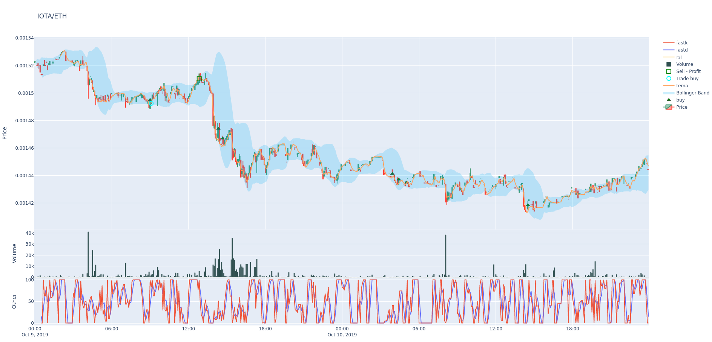

图表绘制¶
本页说明如何绘制价格、指标和利润图表。
已弃用
本页描述的指令（plot-dataframe、plot-profit）应视为已弃用并处于维护模式。
这主要是由于中等规模图表可能导致的性能问题，同时也因为"存储文件并在浏览器中打开"从用户界面角度来看不够直观。
While there are no immediate plans to remove them, they are not actively maintained - and may be removed short-term should major changes be required to keep them working.
Please use FreqUI for plotting needs, which doesn't struggle with the same performance problems.
安装/设置¶
图表绘制模块使用 Plotly 库。您可以通过运行以下命令进行安装/升级：
pip install -U -r requirements-plot.txt
绘制价格和指标¶
freqtrade plot-dataframe 子命令显示包含三个子图的交互式图表：
- 主图：包含K线图及跟随价格的指标（sma/ema）
- 成交量柱状图
- 由
--indicators2指定的附加指标

可用参数：
usage: freqtrade plot-dataframe [-h] [-v] [--no-color] [--logfile FILE] [-V]
[-c PATH] [-d PATH] [--userdir PATH] [-s NAME]
[--strategy-path PATH]
[--recursive-strategy-search]
[--freqaimodel NAME] [--freqaimodel-path PATH]
[-p PAIRS [PAIRS ...]]
[--indicators1 INDICATORS1 [INDICATORS1 ...]]
[--indicators2 INDICATORS2 [INDICATORS2 ...]]
[--plot-limit INT] [--db-url PATH]
[--trade-source {DB,file}]
[--export {none,trades,signals}]
[--backtest-filename PATH]
[--timerange TIMERANGE] [-i TIMEFRAME]
[--no-trades]
options:
-h, --help show this help message and exit
-p PAIRS [PAIRS ...], --pairs PAIRS [PAIRS ...]
Limit command to these pairs. Pairs are space-
separated.
--indicators1 INDICATORS1 [INDICATORS1 ...]
Set indicators from your strategy you want in the
first row of the graph. Space-separated list. Example:
`ema3 ema5`. Default: `['sma', 'ema3', 'ema5']`.
--indicators2 INDICATORS2 [INDICATORS2 ...]
Set indicators from your strategy you want in the
third row of the graph. Space-separated list. Example:
`fastd fastk`. Default: `['macd', 'macdsignal']`.
--plot-limit INT Specify tick limit for plotting. Notice: too high
values cause huge files. Default: 750.
--db-url PATH Override trades database URL, this is useful in custom
deployments (default: `sqlite:///tradesv3.sqlite` for
Live Run mode, `sqlite:///tradesv3.dryrun.sqlite` for
Dry Run).
--trade-source {DB,file}
Specify the source for trades (Can be DB or file
(backtest file)) Default: file
--export {none,trades,signals}
Export backtest results (default: trades).
--backtest-filename PATH, --export-filename PATH
Use this filename for backtest results.Example:
`--backtest-
filename=backtest_results_2020-09-27_16-20-48.json`.
Assumes either `user_data/backtest_results/` or
`--export-directory` as base directory.
--timerange TIMERANGE
Specify what timerange of data to use.
-i TIMEFRAME, --timeframe TIMEFRAME
Specify timeframe (`1m`, `5m`, `30m`, `1h`, `1d`).
--no-trades Skip using trades from backtesting file and DB.
Common arguments:
-v, --verbose Verbose mode (-vv for more, -vvv to get all messages).
--no-color Disable colorization of hyperopt results. May be
useful if you are redirecting output to a file.
--logfile FILE, --log-file FILE
Log to the file specified. Special values are:
'syslog', 'journald'. See the documentation for more
details.
-V, --version show program's version number and exit
-c PATH, --config PATH
Specify configuration file (default:
`userdir/config.json` or `config.json` whichever
exists). Multiple --config options may be used. Can be
set to `-` to read config from stdin.
-d PATH, --datadir PATH, --data-dir PATH
Path to the base directory of the exchange with
historical backtesting data. To see futures data, use
trading-mode additionally.
--userdir PATH, --user-data-dir PATH
Path to userdata directory.
Strategy arguments:
-s NAME, --strategy NAME
Specify strategy class name which will be used by the
bot.
--strategy-path PATH Specify additional strategy lookup path.
--recursive-strategy-search
Recursively search for a strategy in the strategies
folder.
--freqaimodel NAME Specify a custom freqaimodels.
--freqaimodel-path PATH
Specify additional lookup path for freqaimodels.
示例：
freqtrade plot-dataframe -p BTC/ETH --strategy AwesomeStrategy
-p/--pairs 参数可用于指定要绘制的交易对。
Note
freqtrade plot-dataframe 子命令会为每个交易对生成一个图表文件。
指定自定义指标。
使用 --indicators1 用于主图，--indicators2 用于下方的子图（如果数值范围与价格不同）。
freqtrade plot-dataframe --strategy AwesomeStrategy -p BTC/ETH --indicators1 sma ema --indicators2 macd
更多使用示例¶
要绘制多个交易对，请用空格分隔：
freqtrade plot-dataframe --strategy AwesomeStrategy -p BTC/ETH XRP/ETH
要绘制特定时间范围（用于放大查看）
freqtrade plot-dataframe --strategy AwesomeStrategy -p BTC/ETH --timerange=20180801-20180805
要绘制存储在数据库中的交易记录，请结合使用 --db-url 和 --trade-source DB：
freqtrade plot-dataframe --strategy AwesomeStrategy --db-url sqlite:///tradesv3.dry_run.sqlite -p BTC/ETH --trade-source DB
要绘制回测结果的交易记录，请使用 --export-filename <文件名>
freqtrade plot-dataframe --strategy AwesomeStrategy --export-filename user_data/backtest_results/backtest-result.json -p BTC/ETH
绘制数据帧基础¶

plot-dataframe 子命令需要回测数据、一个策略以及一个回测结果文件或数据库，其中包含与该策略对应的交易记录。
生成的图表将包含以下元素：
- 绿色三角形：策略的买入信号。（注意：并非每个买入信号都会生成交易，请与青色圆圈对比。）
- 红色三角形：策略的卖出信号。（同样，并非每个卖出信号都会终止交易，请与红色和绿色方块对比。）
- 青色圆圈：交易入场点。
- 红色方块：亏损或零利润交易的离场点。
- 绿色方块：盈利交易的离场点。
- 与蜡烛图比例对应的指标（例如 SMA/EMA），通过
--indicators1指定。 - 成交量（主图底部的柱状图）。
- 位于成交量柱下方、具有不同比例值的指标（例如 MACD、RSI），通过
--indicators2指定。
布林带
如果存在 bb_lowerband 和 bb_upperband 列，布林带将自动添加到图表中，并绘制为从下轨到上轨的浅蓝色区域。
高级图表配置¶
可以在策略的 plot_config 参数中指定高级绘图配置。
使用 plot_config 时的附加功能包括：
- 为每个指标指定颜色
- 指定额外的子图
- 指定要填充区域的指标对
下面的示例绘图配置为指标指定了固定颜色。否则，连续绘图每次可能产生不同的配色方案，使得比较变得困难。 它还允许多个子图同时显示 MACD 和 RSI。
绘图类型可以使用 type 键进行配置。可能的类型有：
scatter对应plotly.graph_objects.Scatter类（默认）。bar对应plotly.graph_objects.Bar类。
可以在 plotly 字典中指定传递给 plotly.graph_objects.* 构造函数的额外参数。
带有内联注释解释过程的示例配置：
@property
def plot_config(self):
"""
There are a lot of solutions how to build the return dictionary.
The only important point is the return value.
Example:
plot_config = {'main_plot': {}, 'subplots': {}}
"""
plot_config = {}
plot_config['main_plot'] = {
# Configuration for main plot indicators.
# Assumes 2 parameters, emashort and emalong to be specified.
f'ema_{self.emashort.value}': {'color': 'red'},
f'ema_{self.emalong.value}': {'color': '#CCCCCC'},
# By omitting color, a random color is selected.
'sar': {},
# fill area between senkou_a and senkou_b
'senkou_a': {
'color': 'green', #optional
'fill_to': 'senkou_b',
'fill_label': 'Ichimoku Cloud', #optional
'fill_color': 'rgba(255,76,46,0.2)', #optional
},
# plot senkou_b, too. Not only the area to it.
'senkou_b': {}
}
plot_config['subplots'] = {
# Create subplot MACD
"MACD": {
'macd': {'color': 'blue', 'fill_to': 'macdhist'},
'macdsignal': {'color': 'orange'},
'macdhist': {'type': 'bar', 'plotly': {'opacity': 0.9}}
},
# Additional subplot RSI
"RSI": {
'rsi': {'color': 'red'}
}
}
return plot_config
作为属性（旧方法）
将 plot_config 作为属性赋值也是可行的（这曾是默认方式）。 这种方式的缺点是无法使用策略参数，导致某些配置无法工作。
plot_config = {
'main_plot': {
# Configuration for main plot indicators.
# Specifies `ema10` to be red, and `ema50` to be a shade of gray
'ema10': {'color': 'red'},
'ema50': {'color': '#CCCCCC'},
# By omitting color, a random color is selected.
'sar': {},
# fill area between senkou_a and senkou_b
'senkou_a': {
'color': 'green', #optional
'fill_to': 'senkou_b',
'fill_label': 'Ichimoku Cloud', #optional
'fill_color': 'rgba(255,76,46,0.2)', #optional
},
# plot senkou_b, too. Not only the area to it.
'senkou_b': {}
},
'subplots': {
# Create subplot MACD
"MACD": {
'macd': {'color': 'blue', 'fill_to': 'macdhist'},
'macdsignal': {'color': 'orange'},
'macdhist': {'type': 'bar', 'plotly': {'opacity': 0.9}}
},
# Additional subplot RSI
"RSI": {
'rsi': {'color': 'red'}
}
}
}
Note
上述配置假设 ema10、ema50、senkou_a、senkou_b、macd、macdsignal、macdhist 和 rsi 是策略创建的 DataFrame 中的列。
Warning
plotly 参数仅在使用 plotly 库时受支持，在 freq-ui 中无效。
交易仓位调整
如果使用了 position_adjustment_enable / adjust_trade_position()，交易的初始买入价格将在多个订单中取平均值，且交易起始价格很可能会出现在 K 线范围之外。
绘制收益图¶

plot-profit 子命令显示一个包含三个图表的交互式图表：
- 所有交易对的平均收盘价。
- 回测产生的汇总收益。 请注意，这不是实际收益，更多是一种估算。
- 每个单独交易对的收益。
- 交易的并行性。
- 水下图（回撤期间）。
第一个图表有助于了解整体市场的走势。
第二个图表将显示您的算法是否有效。 您可能想要一个稳定产生小额收益的算法，或者一个交易频率较低但波动较大的算法。 此图表还会突出显示最大回撤期的开始（和结束）。
第三个图表可用于发现异常值，即导致收益飙升的交易对事件。
第四个图表可帮助您分析交易并行性，显示 max_open_trades 达到上限的频率。
freqtrade plot-profit 子命令的可能选项：
usage: freqtrade plot-profit [-h] [-v] [--no-color] [--logfile FILE] [-V]
[-c PATH] [-d PATH] [--userdir PATH] [-s NAME]
[--strategy-path PATH]
[--recursive-strategy-search]
[--freqaimodel NAME] [--freqaimodel-path PATH]
[-p PAIRS [PAIRS ...]] [--timerange TIMERANGE]
[--export {none,trades,signals}]
[--backtest-filename PATH] [--db-url PATH]
[--trade-source {DB,file}] [-i TIMEFRAME]
[--auto-open]
options:
-h, --help show this help message and exit
-p PAIRS [PAIRS ...], --pairs PAIRS [PAIRS ...]
Limit command to these pairs. Pairs are space-
separated.
--timerange TIMERANGE
Specify what timerange of data to use.
--export {none,trades,signals}
Export backtest results (default: trades).
--backtest-filename PATH, --export-filename PATH
Use this filename for backtest results.Example:
`--backtest-
filename=backtest_results_2020-09-27_16-20-48.json`.
Assumes either `user_data/backtest_results/` or
`--export-directory` as base directory.
--db-url PATH Override trades database URL, this is useful in custom
deployments (default: `sqlite:///tradesv3.sqlite` for
Live Run mode, `sqlite:///tradesv3.dryrun.sqlite` for
Dry Run).
--trade-source {DB,file}
Specify the source for trades (Can be DB or file
(backtest file)) Default: file
-i TIMEFRAME, --timeframe TIMEFRAME
Specify timeframe (`1m`, `5m`, `30m`, `1h`, `1d`).
--auto-open Automatically open generated plot.
Common arguments:
-v, --verbose Verbose mode (-vv for more, -vvv to get all messages).
--no-color Disable colorization of hyperopt results. May be
useful if you are redirecting output to a file.
--logfile FILE, --log-file FILE
Log to the file specified. Special values are:
'syslog', 'journald'. See the documentation for more
details.
-V, --version show program's version number and exit
-c PATH, --config PATH
Specify configuration file (default:
`userdir/config.json` or `config.json` whichever
exists). Multiple --config options may be used. Can be
set to `-` to read config from stdin.
-d PATH, --datadir PATH, --data-dir PATH
Path to the base directory of the exchange with
historical backtesting data. To see futures data, use
trading-mode additionally.
--userdir PATH, --user-data-dir PATH
Path to userdata directory.
Strategy arguments:
-s NAME, --strategy NAME
Specify strategy class name which will be used by the
bot.
--strategy-path PATH Specify additional strategy lookup path.
--recursive-strategy-search
Recursively search for a strategy in the strategies
folder.
--freqaimodel NAME Specify a custom freqaimodels.
--freqaimodel-path PATH
Specify additional lookup path for freqaimodels.
-p/--pairs 参数可用于限制参与此计算考虑的货币对。
示例：
使用自定义回测导出文件
freqtrade plot-profit -p LTC/BTC --export-filename user_data/backtest_results/backtest-result.json
使用自定义数据库
freqtrade plot-profit -p LTC/BTC --db-url sqlite:///tradesv3.sqlite --trade-source DB
freqtrade --datadir user_data/data/binance_save/ plot-profit -p LTC/BTC